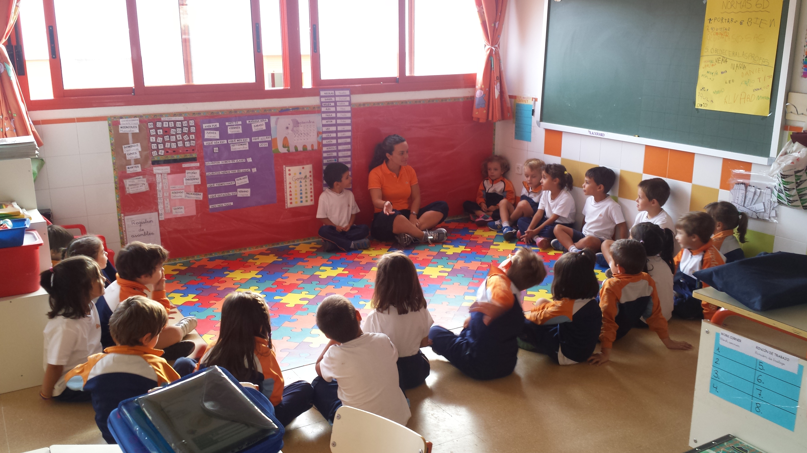
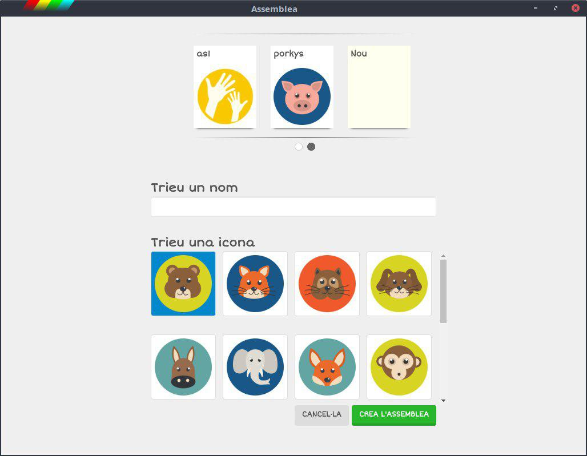
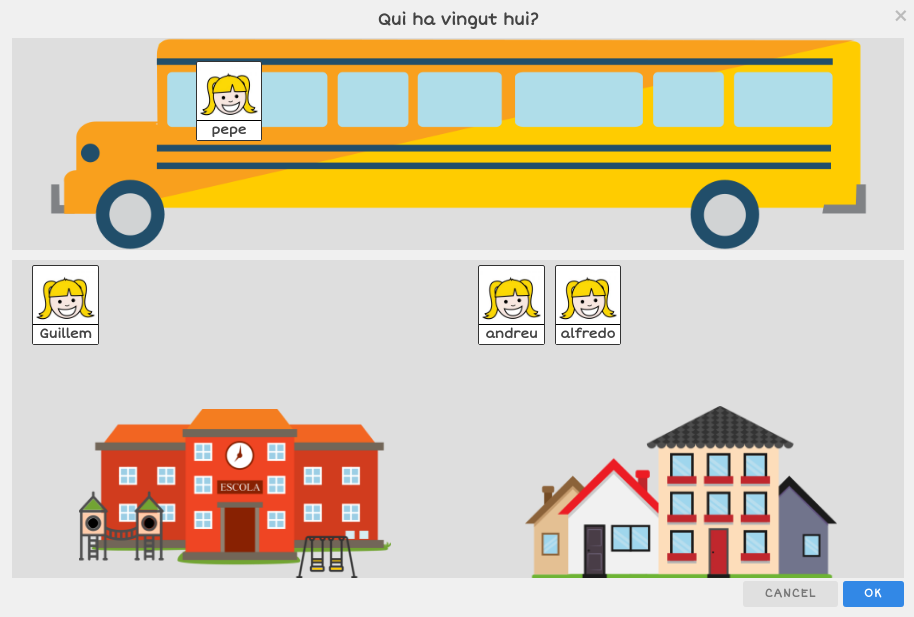
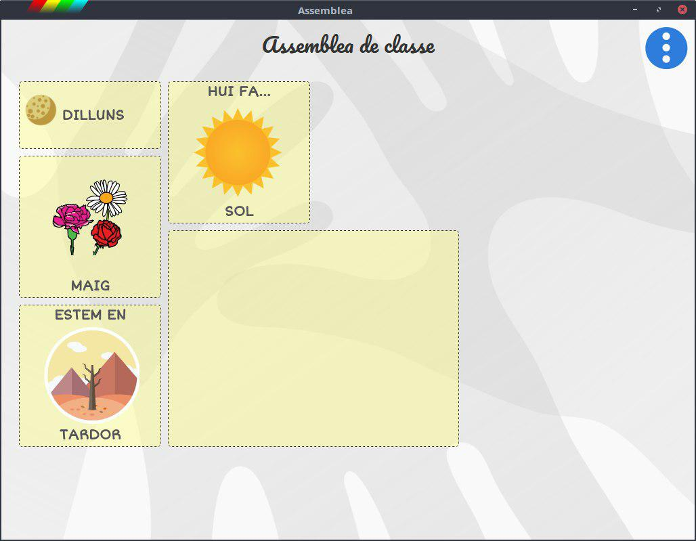

Tria el grup
-
Crea els teus grups
Si fas l'assemblea amb més d'un grup pots personalitzar-los. -
Assigna-li una icona
Aules dels elefants, esquirols, girafes...
Pantalla principal

-
Tria el dia de la setmana
-
Quí ha vingut hui?
-
Ja coneixen els mesos de l'any?
-
En quina estació estem?
-
Treballa l'oratge
Quí ha vingut hui?
-
Tens als alumnes a l'autobús
Personalitza les fotos. -
A casa
-
A l'escola
L'oratge

-
Tria quines opcions vols mostrar
No cal que apareguen totes.
Organitza el tauler
-
Modifica'n la mida
Fes més gran els que vulgues destacar. -
Canvia'n la distribució
Dalt, baix, dreta, esquerra, posa-ho on vulgues. -
Oculta/mostra els que utilitzes
Si vols mostrar/ocultar algun mòdul és ben fàcil.